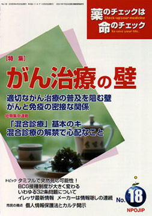

No.18 特集 がん治療の壁 2005年4月 発行
がん
前号では「がん検診は予防になるか」について、大島明医師（大阪府成人病センター）の第4回医薬ビジランスセミナーにおけるゲスト講演を紹介しました。
今回は、「適切ながん治療がなぜ日本では普及しないのか」、「どういう壁がそこに存在するのか」を慶應大学医学部放射線科の近藤誠医師に解説していただきます。また、がんと免疫の関係について浜六郎医師が具体的に解説します。
これらのことは、「がんの予防と治療」について個別の話に入る前の予備知識としてぜひ必要なことです。
別に、短期集中連載では「混合診療」を取り上げました。今回と次回とに分けて、混合診療の基本的な知識、医師の立場、医療消費者の立場、開業医師から見た混合診療というようにさまざまな角度から「混合診療」を考えてみたいと思います。
※ 2004年11月20日（土）〜21日（日）の2日間にわたって開催した第4回医薬ビジランスセミナーのテーマ「○×△の壁は崩せるか？ 見直そう、予防と治療のEBM」の報告を順次特集で扱います。
もくじ
特集
■適切ながん治療の普及を阻む壁
■第4回医薬ビジランスセミナー 参加者の声
■がんと免疫の密接な関係
短期集中連載
■「混合診療」基本のキ
■混合診療の解禁で心配なこと
提言
■NPOJIPの提言
よい薬の実現に、試験登録制と情報開示は必須！！
連載
■市民の視点
個人情報保護法とカルテ開示
■山郷から 花を追う
■編集長インタビュー
SJS患者会代表 湯浅 和恵さんに聞く
■みんなのやさしい生命倫理 １８
インフォームド・コンセント（５） 臨床場面
■ぷちいのちジャーナル
金沢大学「無断臨床試験」裁判
■映画の中のクスリ（11） 臨床試験
■リレーエッセイ 野宿者
■EBM超入門（7）
ランダム化比較試験はどこにある？ PubMedと医中誌
■新薬承認のカラクリ
タミフルはインフルエンザ予防に無効
■行ってきました
京都大学薬剤疫学開講5周年シンポジウム
トピック
■１ タミフルで突然死の可能性！
■２ BCG接種制度が大きく変わる
■３ いわゆる32条問題について
■４ イレッサ最新情報 メーカーは情報隠しの連続
■勉強会だより
■質問箱
Q：子どもの喘息に有効な薬は？
■読者の声
・「ホルモンを『賢く補う』って、どういう風に？」
・「インスリンの自己注射へ踏み切れない･･･」
・「高齢者の薬の情報を」 など
■書評
・『もう牛を食べて安心か』
・『患者は何でも知っている EBM時代の医師と患者』
・『"レセプト審査"の不可思議 EPO訴訟から学ぶ不当審査との闘い方』
■NPOJIP関連書籍/TIP出版物
■NPOJIP書籍申込み用紙
■編集後記
短期集中連載より
「混合診療」基本のキ
そもそも何なのか？ これからどう変わるのか？
北澤京子（日経BP社医療局）
2004年12月15日、政府の規制改革担当大臣と厚生労働大臣との直接の話し合いにより、かねて懸案になっていた「混合診療」の解禁問題が、とりあえずの決着をみました。混合診療の全面的な解禁は見送られましたが、その範囲が拡大されることになりました。
とはいえ、そもそも「混合診療」とはいったいどういう意味なのか、「混合診療」はなぜ禁止されてきたのか、また、「混合診療」が解禁されるとどうなるのか…などなど、よく分からないことがたくさんあります。そこで今回は、「混合診療」あるいは「混合診療の解禁」について、基本のキを説明します。
（以下、引用省略）
詳しくは本誌で。